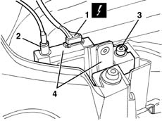
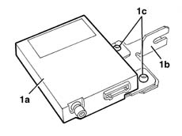

5020M07 RECEIVER for remote control ADDITIONAL INDEPENDENT HEATER - R.R.
- Path
- Procedures > 50 AUXILIARY UNITS > 5020 HEATER > 5020M supplementary independent heater > 5020M07 RECEIVER for remote control ADDITIONAL INDEPENDENT HEATER - R.R.
- Kind
- repair procedure (removal / refitting; the operation number is the code)
- Applies to
- all engines; all production periods
- Interactive page
- https://sloeber94.github.io/elrnDB-fMltpl/en/#/2891792
Applies to: all engines; production: da 09/03, da 04/02 a 08/03
 Removing
Removing
 Refitting
Refitting5580M14 positionable navigation system panel - r r
7040A96 facia glove compartment flap (1) lh or rh - r r
5580C26 LOCK BARREL KEY/SWITCH for deactivating passenger 'AIR BAG - R.R.
7040A44 facia lh side cover - r r
1. Disconnect the electrical connection.
 | Name | Connector |
|---|---|---|
1 | Additional heater remote control receiver |
2. Disconnect the aerial lead connection.
3. Undo the bolt.
4. Extract the receiver and support.

Applies to: all engines; production: da 09/03, da 04/02 a 08/03
1. If necessary, separate the receiver (1a) from the support (1b) after having undone the bolts (1c).

Applies to: all engines; production: da 09/03, da 04/02 a 08/03
Refitting
RemovingCheck that the receiver is not damaged.
If separated, position the receiver on the support and fasten it using the bolts.
Place the receiver in position and secure it using the bolts.
Connect the aerial lead connection.
Connect the electrical connection.
7040A44 facia lh side cover - r r
5580C26 LOCK BARREL KEY/SWITCH for deactivating passenger 'AIR BAG - R.R.